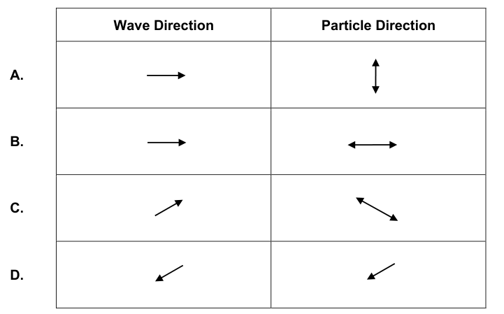
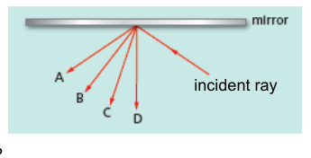
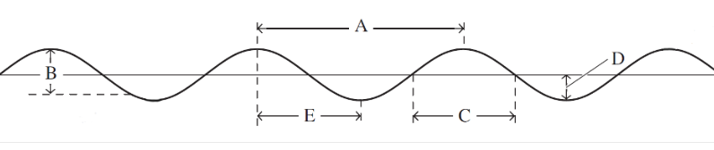
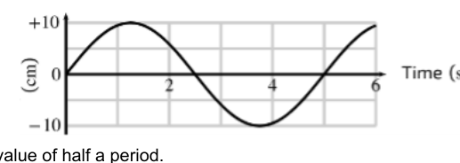
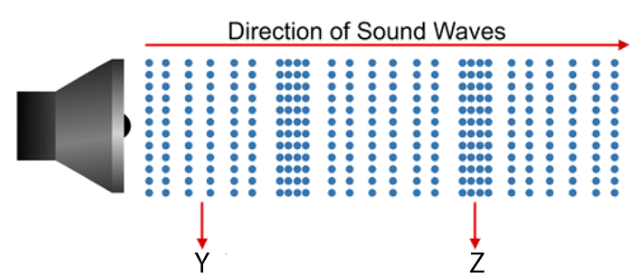
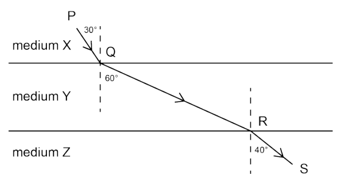
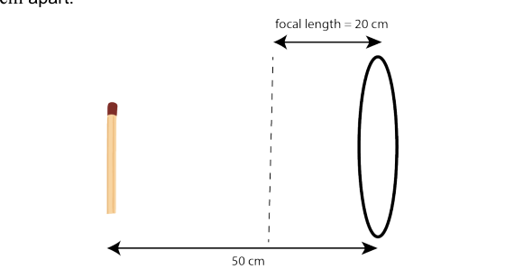
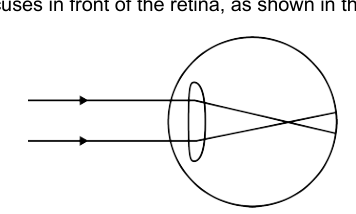
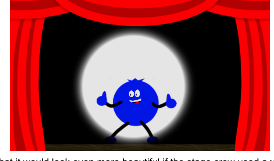

Section A: Multiple choice (12 marks)
What is the period of a wave travelling along a slinky with a frequency of 7.7 Hz?
T = 1 / f = 1 ÷ 7.7 = 0.13 s.
What is the wavelength of a wave moving across a pond with a frequency of 0.12 Hz and a speed of 2.8 m/s?
λ = v / f = 2.8 ÷ 0.12 = 23 m.

Which of the options above correctly shows the movement of a longitudinal wave and its particles?
In a longitudinal wave the particles vibrate back and forth parallel to the direction the wave travels.
Sound is made of

Consider the plane mirror above, which shows an incident beam of light. Which ray would be reflected?
The angle of reflection equals the angle of incidence.
Light travels more slowly in Perspex than in air. Light going from Perspex into air will
When a light ray passing from glass to air hits the boundary at more than the critical angle of incidence, the ray
Which part of the eye is most likely to change when a distant object is brought close to the eye, with the same lighting?
The lens changes shape (gets thicker) to focus on near objects.
In most convex lenses,
Some shops have mirrors that give a wide view of the inside of the shop. What shape are these mirrors most likely to be?
Your hand feels cold as an ice block melts on it. Which is the correct explanation?
The handles of metal tongs get hot after being used for a while on the barbecue because
Section B: Short answer (33 marks)
Question 1 (3 marks)
The image shows a travelling wave at a particular time. The wave transmits energy to the right. Five lengths, A–E, are shown.

Which letter (A–E, or "none") matches each wave feature?
Wavelength:
Period:
Amplitude:
The period is a time, so it can't be shown on a picture of the wave at a single moment.
Question 2 (4 marks)
The graph shows a transverse wave over time.

State the value of half a period.
State the value of the amplitude, in metres.
10 cm = 0.10 m.

Name the region at point Y:
Name the region at point Z:
Question 3 (4 marks)
The table shows the approximate speed of sound in various materials and at different temperatures.
| Material | Speed of sound (m/s) | Density (kg/m3) |
|---|---|---|
| Air (at 0 °C) | 331 | 1.30 |
| Air (at 18 °C) | 342 | 1.20 |
| Glass | 5200 | 2500 |
| Steel | 5790 | 7850 |
| Water | 1481 | 997 |
| Wood | 3960 | 704 |
Describe the effect of a solid's density on the speed of sound in it.
Sound travels faster through denser solids.
Describe the effect of a gas's temperature on the speed of sound in it.
Sound travels faster in gases at warmer temperatures.
You can see a logger cutting wood in the distance before you hear the axe, because light travels faster than sound. If the axe is heard 0.5 s after it is seen, calculate how far away the logger is.
d = v × t = 330 m/s × 0.5 s (1 mark) = 165 m (1 mark).
Question 4 (2 marks)
A man whose eyes are 1.6 m above the ground faces a plane mirror standing vertically, with its lower edge on the ground. He can only just see the whole of his shoes in the mirror.
On paper, draw a diagram including the man's eyes and feet, the mirror, and ray tracing. Describe it, then compare.
A ray from his feet hits the mirror at half his eye height (0.8 m) and reflects up into his eyes, with the angle of incidence equal to the angle of reflection.
Calculate the height of the mirror.
The ray from his shoes reflects off the mirror halfway between his feet and his eyes, so the mirror only needs to reach 1.6 ÷ 2 = 0.8 m.
Question 5 (5 marks)
A ray of light is directed from medium X into medium Y, and then into medium Z.

Which of the three media has the highest density? Medium
Briefly outline your reasoning.
Light bends away from the normal from X into Y (30° → 60°), so Y is less dense than X. It bends back towards the normal into Z (60° → 40°), so Z is denser than Y, but not as dense as X (it doesn't get back to 30°). X is denser than Z because the X–Y interface produces more refraction than the Y–Z interface.
Two Year 12 physicists were discussing whether total internal reflection could occur at the boundary between medium Y and medium Z.
- Amy said that the angle of incidence could be increased until the light hit the boundary at the critical angle.
- Heath said that the light would have to travel the other way, starting in medium Z and going into medium Y.
Evaluate each physicist's argument and decide who is correct. You must discuss both statements.
- Amy is incorrect for light starting in medium Y: going from Y into Z, the light moves into a denser medium and bends towards the normal, so total internal reflection can never happen that way (1 mark).
- Heath is correct that the light must be reversed, travelling from medium Z into medium Y (from higher to lower density) (1 mark).
- However, Heath also needs Amy's point: the angle of incidence must then be increased beyond the critical angle (1 mark).
Question 6 (3 marks)
A match is placed upright opposite one face of a convex lens with a focal length of 20 cm. The match and lens are 50 cm apart.

Draw (on paper) the image of the match. Describe it, then compare.
Using ray tracing (a ray parallel to the axis refracts through the focal point; a ray through the centre of the lens goes straight on), the image forms on the other side of the lens. It is:
- inverted (upside down) (1 mark),
- smaller than the match (1 mark),
- closer to the lens than 50 cm (about 33 cm away) (1 mark).
Question 7 (5 marks)
Inside the eye, light rays from an object change direction as they pass through the cornea and lens. For a person with perfect vision, the rays meet perfectly on the retina.
Name the process by which the cornea and lens change the direction of light:
Not everyone has perfect vision. A short-sighted person can only see close objects clearly: light from distant objects focuses in front of the retina, as shown below.

Name the lens needed to correct short-sighted vision:
On paper, show how short-sighted vision can be corrected: draw the lens and extend the two rays. Describe it, then compare.
- The rays diverge (spread out) at the concave lens (1 mark).
- They converge at the eye's lens (1 mark).
- They now focus on the retina (1 mark).
Question 8 (4 marks)
An actor loved wearing a blue costume, which always looked blue in white light. She hoped it would look even better if the stage crew used a yellow spotlight, but she was very disappointed with the result.

Complete the table for the blue costume under white light.
| Object | Colours reflected | Colours absorbed |
|---|---|---|
| Blue costume |
Complete the table for the blue costume under yellow light.
| Object | Colours present in the light | Colours reflected |
|---|---|---|
| Blue costume |
Yellow light is red + green. The blue costume absorbs both, so it reflects nothing and looks black.
Identify the main method of heat transfer in each situation.
Aidan feels his arms getting warm as he plays cricket on a summer day:
Mika touches a tray that has just come out of the oven and burns her hand:
The inside of a car warms up soon after the heater is turned on: